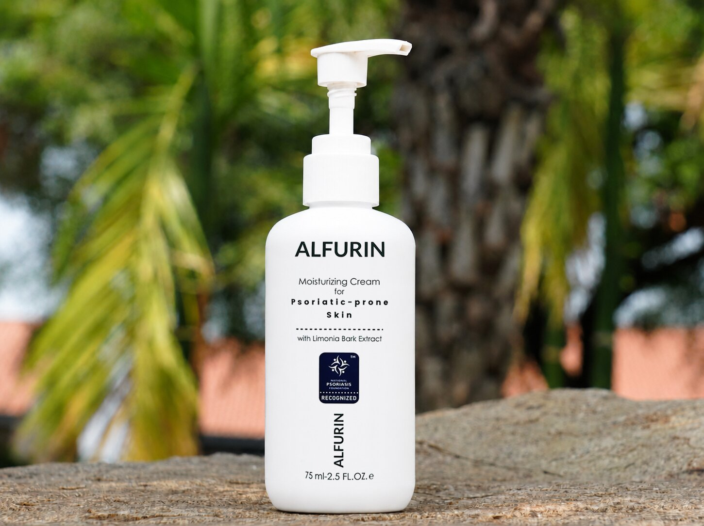

La Gamma ALFURIN
Due Prodotti. Un Sistema Completo.
Formulati per l'uso quotidiano combinato: la lozione e la crema agiscono insieme per lenire, proteggere e ripristinare la pelle predisposta alla psoriasi.

Idratazione Quotidiana
Lozione Idratante
Difesa e Prevenzione Quotidiana
- Formula leggera e ad assorbimento rapido
- Riduce la desquamazione e le squame superficiali
- Calma il rossore e l'irritazione cronica
- Estratto a concentrazione inferiore per la prevenzione

Trattamento Intensivo
Crema Idratante
Sollievo Mirato e Intensivo
- Estratto a concentrazione inferiore per la prevenzione
- Agisce sulle placche più spesse
- Ritenzione profonda dell'idratazione durante la notte
- Doppia azione antinfiammatoria